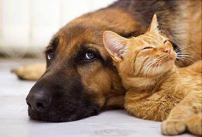

About Us
History
Durham House of Pets was founded by Newt Scamander in 2006. Mr. Scamander is a senior scholar of pets and beasts. He was willing to build a house of pets to help pets’ owners and to connect his knowledge to the real world. Thanks to wised Mr. Scamander and his deep view, DHP has become the best pets house in New England.
Why use us?
“Not only a house of Pets.” is the slogan of DHP. DHP provides pet supplies supermarkets, live sales, pet beauty, pet foster care, pet medical care, pet park, pet photography etc. And we also strive to provide our customers with the best selection, the best products, and the best service in town. What is more, DHP can provide service to all kinds of animals, not matter insect or huge beast because our employees are fantastic. DHP is your best choice to purchase pets supplies and train your pets.
